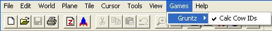

| Games Menu  |
|---|
| Claw |
| N/A for Gruntz. Only found in the Object mode menu. |
| Get Medieval |
| N/A for Gruntz. Only found in the Object mode menu. |
| Gruntz - Calc Cow IDs |
Important! When you GruntzEdit for the very first time, make sure to select the Games menu and then select Calc Cow Ids from the Gruntz sub-menu. This turns on a GruntzEdit feature that is required for certain game logics (e.g. switches). Note: This step only needs to be done once. You should never have to do it again. |